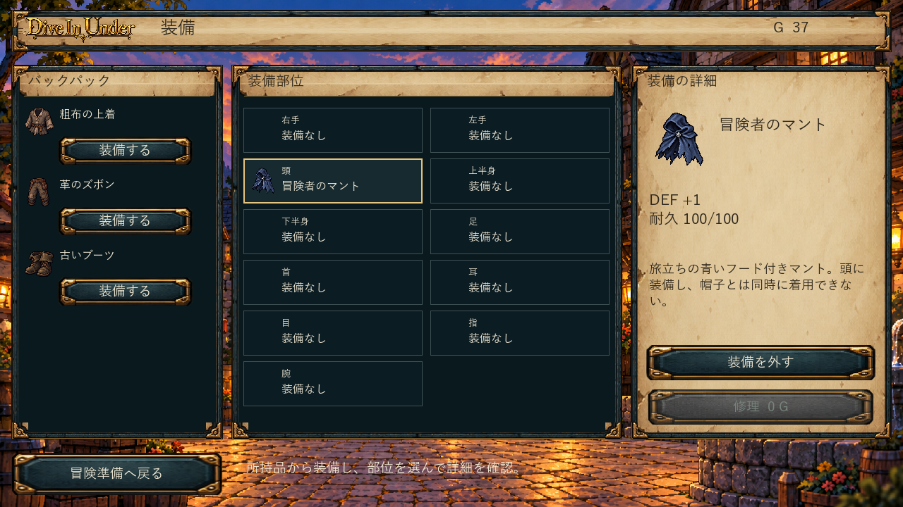

01 所持品・倉庫
左クリックは選択、詳細ボタン／Enter・Shiftクリック・ドラッグは共通の個体移動。15＋3・支給制限・個別耐久を維持。
02 探索中の装備
戦闘外の探索・受領画面で所持品を開き、現在→交換後の能力と±で比較。満杯の一対一交換、HP/SPの着脱回復防止。

変更前：0.6.4 実画面。専用機能がなかった箇所は旧探索／町装備を掲載。 変更後：0.7.0 実画面
変更後：0.7.0 実画面04 攻撃・被ダメージ
確定済みのログを順に表示。短い踏込み・命中時のHP/数値・点滅、MISS・撃破・既存状態表示。
変更前：0.6.4 実画面。専用機能がなかった箇所は旧探索／町装備を掲載。変更後：0.7.0 実画面 実画面3枚の連続表示（動画ではありません）
06 イベント
画像アイコン・短文・2択→結果→復帰。既存の湧き水／標識／祈祷の残光を使用。
変更前：0.6.4 実画面。専用機能がなかった箇所は旧探索／町装備を掲載。 変更後：0.7.0 実画面
変更後：0.7.0 実画面 追加実画面：09-event-result